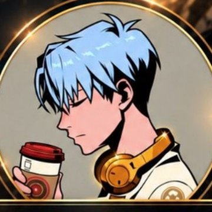

華語群
本群交流與基礎建立
- 行情簡析與觀點分享
- 交易心態與觀念
- 日常討論與問題解答
- 不定期公開直播
交易之路很漫長，
但你不必一個人走。
我們專注於分享正確的交易邏輯、市場心態與實戰技術，協助你建立屬於自己的交易系統。
不追消息、不靠感覺，每一筆進出都說得出理由。
虧損時不亂、獲利時不飄。心態穩，系統才跑得下去。
以纏論為核心，從 K 線、分型、筆到線段與中樞，一步步學會看懂走勢。
最終目標：協助你建立屬於自己的交易系統。
一邊交流打基礎，一邊專心吸收資訊，討論和資料各自乾淨。
交流與基礎建立
深度學習與策略資源
纏論的每一層都建立在前一層之上，所以我們照這個順序教。
先把 K 線整理乾淨，後面的判斷才有依據。
找出走勢裡的轉折點。
連接相鄰的頂與底，看出最小的走勢單位。
由筆組成，判斷線段的延伸與終結。
多空反覆爭奪的價格區間。
把前面全部串起來，用在實盤。

脆上分析師 · @zqqnc
每一場直播都留有回放，錯過了也能隨時複習。
孤軍奮戰的交易之路很漫長。
有一群同路人並肩作戰，感覺就完全不同了。
在 Threads 追蹤小益，先看看我們平常分享的內容。
在任一則社群貼文底下留言，讓我們知道你想加入。
小益會親自把交流方式傳給你，加入華語群就能開始。
可以。華語群就是交流與基礎建立的地方，直播也從 K 線包含處理和頂底分型開始講。不懂就在群裡問。
分析群專門放策略觀點、日報和教學回放。禁言能讓資料不被聊天洗掉，想討論的內容可以回到華語群聊。
我們分享的是交易邏輯與分析方法，目的是讓你建立自己的判斷。所有內容僅供學習交流，進出場請自行評估。
在 Threads 追蹤 @zqqnc，於貼文底下留言打聲招呼，小益會親自把交流方式傳給你。